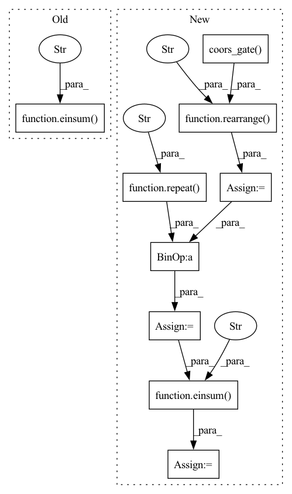

Pattern ID :24284
Before Change
rel_coors = self.rel_coors_norm(rel_coors)
coors_out = einsum("b h i j, b i j c -> b i c h" , coor_weights, rel_coors)
coors_out = self.to_coors_out(coors_out)
// derive attention
After Change
coor_weights = coor_weights.softmax(dim = -1)
rel_coors = self.rel_coors_norm(rel_coors)
rel_coors = repeat( rel_coors, "b i j c -> b i j c h" , h = h)
if exists(self.coors_gate):
rel_coors_signs = self.coors_gate( coors_gate_input)
rel_coors_signs = rearrange( rel_coors_signs, "b i j h -> b i j () h" )
rel_coors = rel_coors * rel_coors_signs
coors_out = einsum("b h i j, b i j c h -> b i c h" , coor_weights, rel_coors)
coors_out = self.to_coors_out(coors_out)
// derive attention
In pattern: SUPERPATTERN
Frequency: 3
Non-data size: 9
Instances Fragment ID: 75329180
Project Name: lucidrains/en-transformer
Commit Name: 5fa899a08f06db745808ae06275da2e2b4ada435
Time: 2021-05-18
Author: lucidrains@gmail.com
File Name: en_transformer/old.py
M Class Name: EquivariantAttention
N Class Name: EquivariantAttention
M Method Name: forward(6)
N Method Name: forward(6)
M Parent Class: nn.Module
N Parent Class: nn.Module
M File Name: en_transformer/old.py
N File Name: en_transformer/old.py
M Start Line: 298
M End Line: 309
N Start Line: 304
N End Line: 322
Before Change
coor_attn = coor_weights.softmax(dim = -2)
rel_coors = self.norm_rel_coors(rel_coors)
coors_out = einsum("b i j h, b i j c -> b i c h" , coor_attn, rel_coors)
coors_out = self.combine_coors_heads(coors_out)
// derive attentionAfter Change
coor_attn = coor_weights.softmax(dim = -2)
rel_coors_sign = rearrange(self.coors_gate( coors_mlp_input) , "b i j h -> b h i j ()" )
rel_coors = self.norm_rel_coors(rel_coors)
rel_coors = repeat( rel_coors, "b i j c -> b h i j c" , h = h) * rel_coors_sign
coors_out = einsum("b i j h, b h i j c -> b i c h" , coor_attn, rel_coors)
coors_out = self.combine_coors_heads(coors_out)
// derive attention Fragment ID: 75329173
Project Name: lucidrains/en-transformer
Commit Name: f9c37c746e9fd4423bea32d0dcde2a466e252ba2
Time: 2021-05-16
Author: lucidrains@gmail.com
File Name: en_transformer/coors_attention.py
M Class Name: EquivariantAttention
N Class Name: EquivariantAttention
M Method Name: forward(6)
N Method Name: forward(6)
M Parent Class: nn.Module
N Parent Class: nn.Module
M File Name: en_transformer/coors_attention.py
N File Name: en_transformer/coors_attention.py
M Start Line: 306
M End Line: 308
N Start Line: 303
N End Line: 318
Before Change
rel_coors = self.rel_coors_norm(rel_coors)
coors_out = einsum("b i j, b i j c -> b i c" , coor_weights, rel_coors)
// derive attention
sim = qk.clone()After Change
coor_attn = coor_weights.softmax(dim = -2)
rel_coors_sign = self.coors_gate( coors_mlp_input)
rel_coors_sign = rearrange( rel_coors_sign, "b i j h -> b i j () h" )
rel_coors = self.norm_rel_coors(rel_coors)
rel_coors = repeat( rel_coors, "b i j c -> b i j c h" , h = h)
rel_coors = rel_coors * rel_coors_sign
coors_out = einsum("b i j h, b i j c h, h -> b i c" , coor_attn, rel_coors, self.coors_combine)
// derive attention
sim = qk.clone() Fragment ID: 75329175
Project Name: lucidrains/en-transformer
Commit Name: 3cf2206856883bba9a13ba4541510b4fe48a6628
Time: 2021-05-16
Author: lucidrains@gmail.com
File Name: en_transformer/en_transformer.py
M Class Name: EquivariantAttention
N Class Name: EquivariantAttention
M Method Name: forward(6)
N Method Name: forward(6)
M Parent Class: nn.Module
N Parent Class: nn.Module
M File Name: en_transformer/en_transformer.py
N File Name: en_transformer/en_transformer.py
M Start Line: 182
M End Line: 307
N Start Line: 189
N End Line: 325